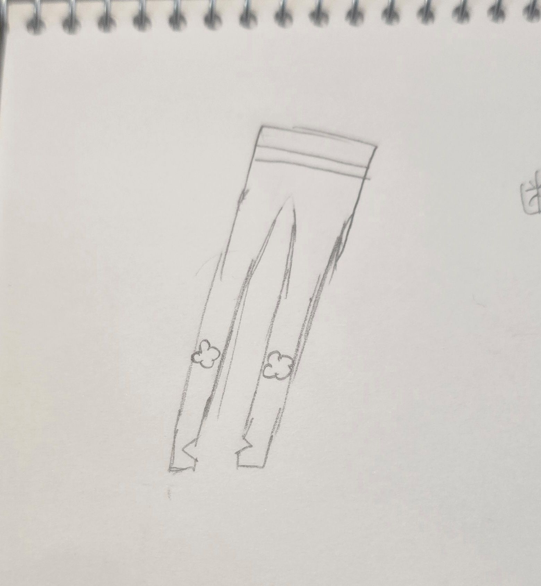
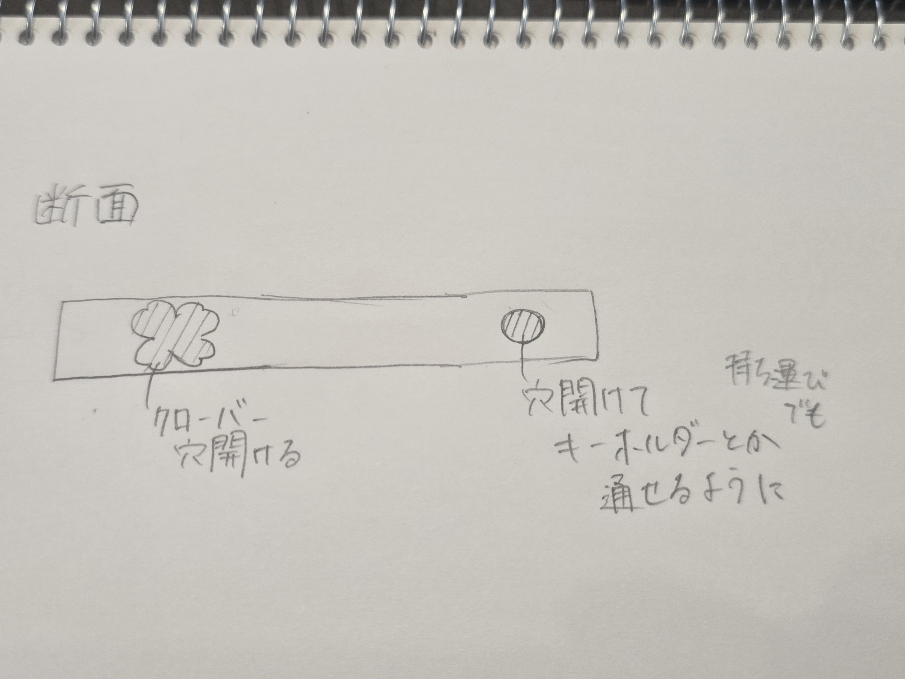
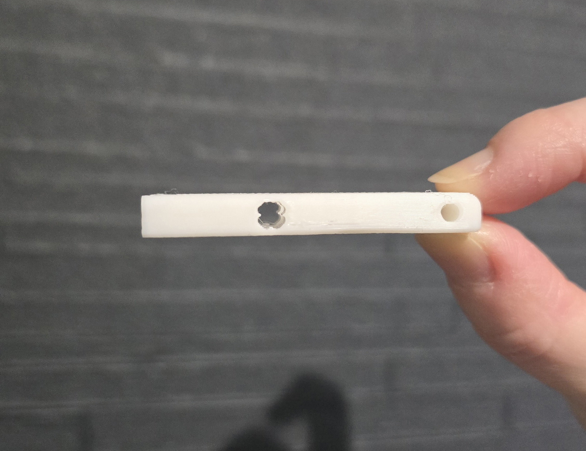
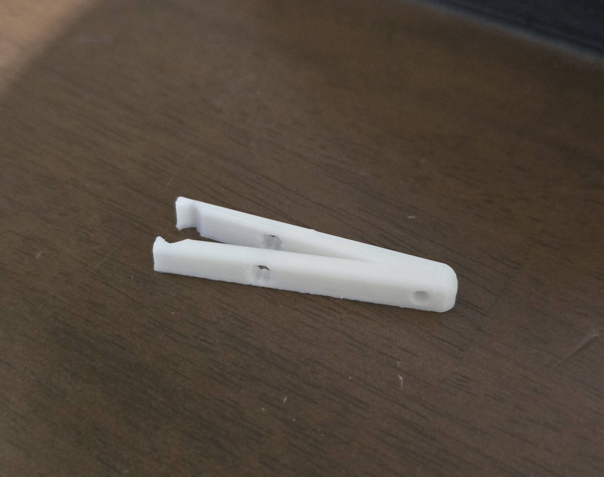
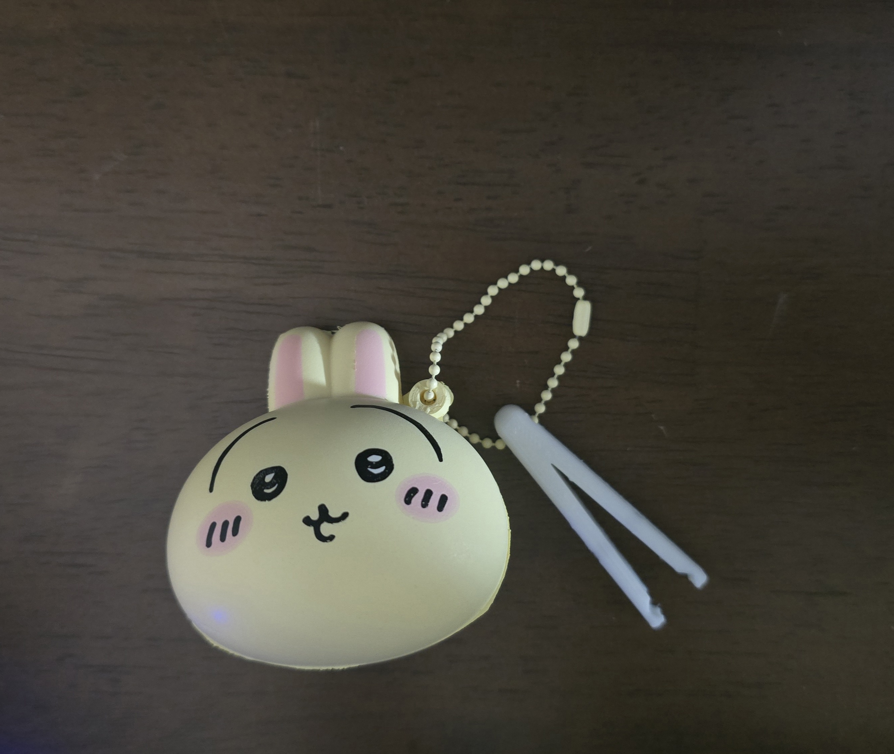
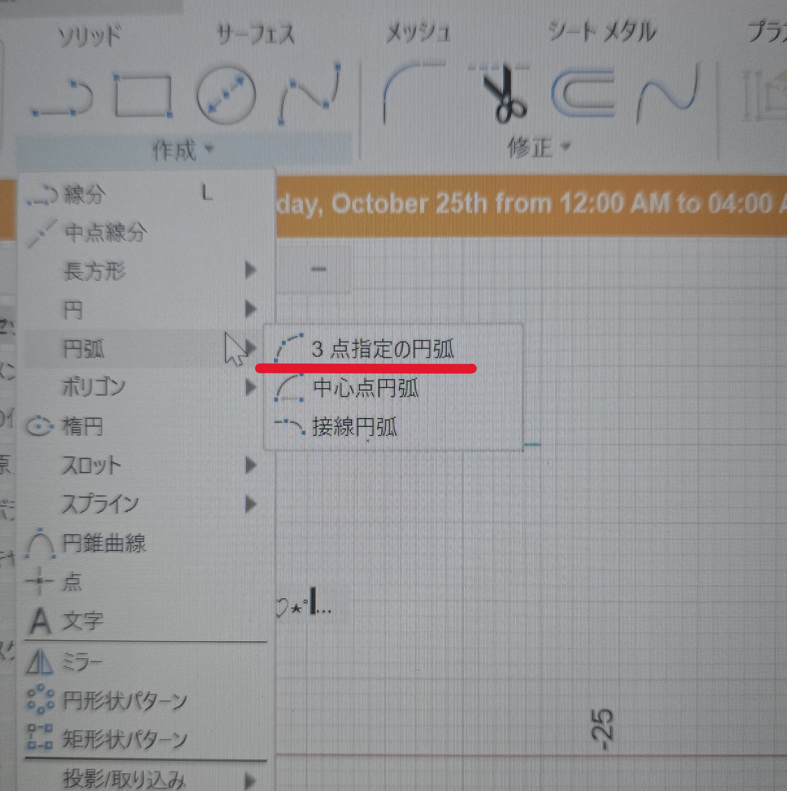
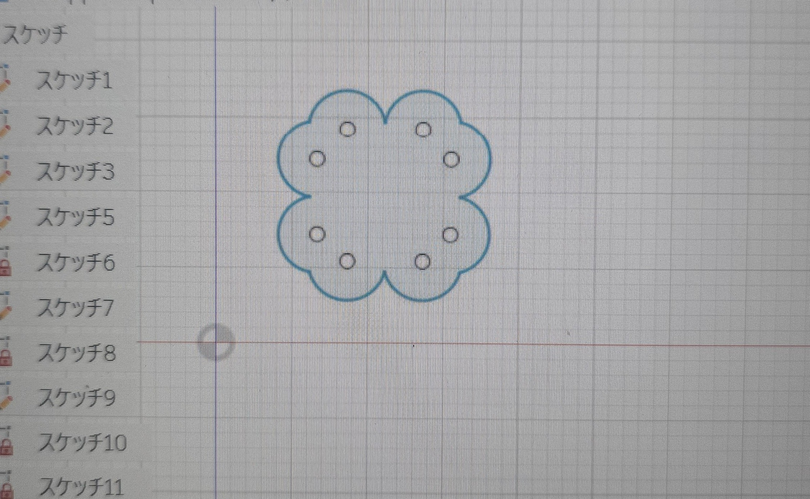

作品タイトル：幸運を掴むピンセット
≪構想のスケッチ≫


≪完成品≫



【作品の説明】
ピンセットの根元に穴が開いていて紐を通したり好きなキーホルダーをつけることができる
途中のクローバーの穴開きもポイント
ピンセットをスケッチするところから苦しんだので形はシンプルなものにしました。
大きさ 長さ5cm✕幅1.8cm✕高さ5mm
【なぜこの作品を作ろうと思ったか】
構想を考えながら休憩で韓ドラを見ていた時、私が好きな韓ドラの中で四つ葉のクローバーが数々の危機を救い、幸運をもたらしたことを思い出しました。
そしてダジャレっぽくなってしまいますがピンセットは何かをつかむものでクローバーの花言葉は「幸運」です。
この二つを掛け合わせた「幸運を掴む」という単語が思いつき、誕生しました。
【製作プロセスの中で調べたこと】
三点円弧機能
曲線が多いクローバーは三点円弧機能を使ってなんとか描きました。
始点と終点を決めてそこの中に円弧を書いてくれる機能です


【設計ファイル】
stlファイル